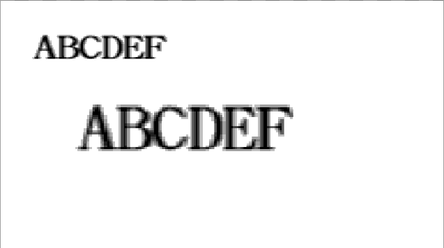
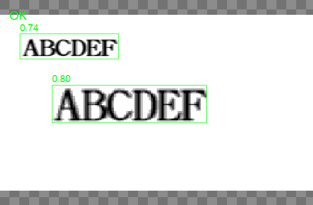
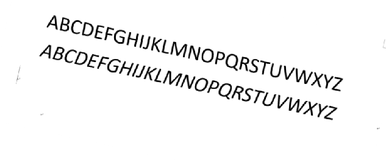
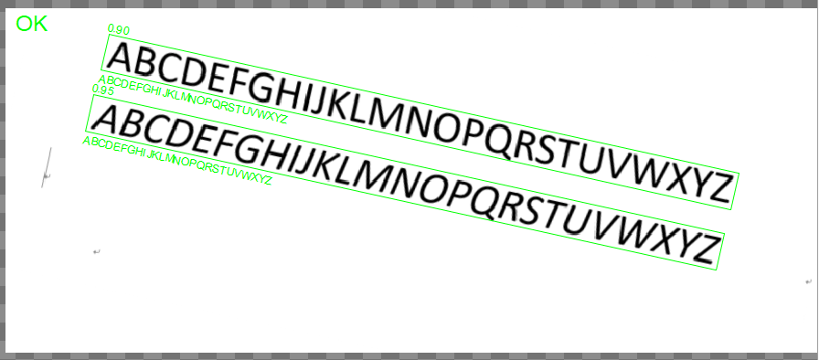

深度学习OCR主要用于图像中字符文本行的识别。与原来的OCR工具相比，整体技术翻新，应用深度学习易用性大幅度提高，主要具备以下功能：
1) 文本定位功能：从全图或者ROI区域定位文本，可实现多文本定位，包括旋转字符、颠倒字符、点阵字符、浮雕字符、镭射蚀刻字符、包裝标签字符、低对比度字符，复杂背景字符。
效果图如下所示：


2) 文本识别功能：从全图或者ROI区域中识别字符，可识别字符集为"_!\“%&‘()+-,./0123456789:;?[]@#$*<>=~{}\abcdefghijklmnopqrstuvwxyzABCDEFGHIJKLMNOPQRSTUVWXYZ"，
包括点阵字符、浮雕字符、镭射蚀刻字符、包裝标签字符、低对比度字符，复杂背景字符，在文本分类功能加持下可识别颠倒字符。效果图如下所示：


| 分类 | 参数名称 | 参数描述 |
|---|---|---|
| 属性窗口 | 执行模式 | 可选定位、识别和仅识别。 定位是只对文本区域做定位；识别包含两步：定位和识别；仅识别：不需要定位，对ROI区域的内容进行识别。 |
| 是否启用ROI | 是否启用ROI，若为否，则为全图匹配识别。 | |
| 定位阈值 | 定位框分数阈值，用于滤除分数较低检测框，取值范围为(0.0,1.0]的浮点数。 | |
| 最长边 | 控制图像缩放尺寸，缩放后图像最长边不大于该值，取值范围为[32,5000]的整数。 | |
| 扩张系数 | 控制定位框相对于字符区域紧致程度，取值范围为(0.0,5.0]的浮点数。 | |
| 识别阈值 | 识别字符串分数阈值，用于滤除分数较低字符串，取值范围为(0.0,1.0]的浮点数。 | |
| 归一化宽度 | 控制图像宽度缩放尺寸，取值范围为[32,2000]的整数。 | |
| 是否启用分类器 | 选择是的时候会启用分类器，当启动时对颠倒字符识别效果更佳。 | |
| 识别范围 | 输入需要识别字符范围的字符串。范围是!\“%&‘()+-,./0123456789:;?[]@#$*<>=~{}\abcdefghijklmnopqrstuvwxyzABCDEFGHIJKLMNOPQRSTUVWXYZ | |
| 数据链 | 输入图像 | 用来实时识别的输入图像，只支持灰度图像。 |
| 二维线性变换 | 输入的定位二维线性变换结果，以根据其变换相应的识别区域 |
| 分类 | 参数名称 | 参数描述 |
|---|---|---|
| 输出窗口 | 输入图像 | 输入图像宽度、高度、像素大小。 |
| 定位矩形区域 | 选择定位模式时候有效，为定位得到的所有文本框矩形。 | |
| 定位分数 | 选择定位模式时候有效，为定位得到的所有文本的定位分数。 | |
| 识别矩形区域 | 选择识别模式时候有效，为识别过程中得到的所有文本框矩形。 | |
| 识别分数 | 选择识别模式时候有效，为识别得到的所有文本的识别分数。 | |
| 识别结果字符串 | 选择识别模式时候有效，为识别得到的所有文本的识别结果字符串。 | |
| 第一个识别字符串 | 选择识别模式时候有效，为识别到的第一个结果字符串。 | |
| 执行结果 | 工具执行结果。 | |
| 执行时间 | 工具执行时间。 | |
| 数据链 | 识别结果字符串 | 选择识别模式时候有效，为识别得到的所有文本的识别结果字符串。 |
| 第一个识别字符串 | 选择识别模式时候有效，为识别到的第一个结果字符串。 |
错误代码的含义，如下表：
| 错误码 | 含义 |
|---|---|
| 1 | 输入图像无效 |
| 2 | ROI区域无效 |
| 3 | 模型未初始化 |
| 4 | 文本检测前处理失败 |
| 5 | 文本检测推理失败 |
| 6 | 文本检测后处理失败 |
| 7 | 文本检测未知内部错误 |
| 9 | 文本检测参数无效 |
| 8 | 检测结果为空 |
此工具由于使用深度学习方法进行识别，所以需要载入训练好的模型，会增加一些耗时，具体体现在：
新增工具后的第一次执行中。
加载包含该工具工程的时候。
当输入图像大小改变(不启用ROI)或者ROI区域大小改变(启用ROI)时，执行工具耗时会有一些增加。
ROI矩形区域的宽度和高度不能太小，当小于64个像素时候会执行失败。
使用深度学习OCR工具时候硬件选型和系统要求：
工控机CPU要求在5代以上，系统要求是Win10。（不符合要求可能有崩溃风险）
当输入的ROI区域包含要识别的文本，并且比较紧致的时候，要用“仅识别”功能，不要用“识别”功能，因为不需要再定位了。
参见“\Samples\深度学习OCR工具.gvp”。